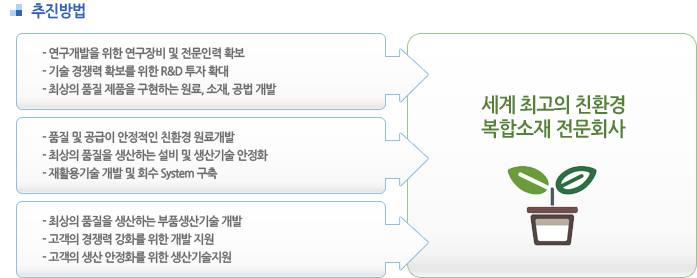

| 1단계 : 기초확립 | 2단계 : 경쟁력 제고 | 3단계 : 국제경쟁력 강화 |
|---|---|---|
| - 노사 화합을 통한 일체감 형성 - 자동차 분야 기술력 제고 + 기존 소재 경쟁력 제고 + 적용부품 확대 - 타용도 분야 참여 확대 + 건축 및 조경재 + 식품 및 포장용기 - 가격/품질 만족 고객 신뢰 제고 |
- 관련분야 참여로 시너지 창출 + 부품성형사업 확대 + 목분 및 컴파운딩 사업 등 - 타용도 매출 활성화 + 인조목재 진출 및 판매망 구축 + 식품 및 포장용기 소재 및 부품 - 해외시장 개척 활성화 |
- 해외진출 및 안정화 |

도해 속 글자
위 그림에 적힌 내용을 글로 옮겼습니다.
VISION
- 인류사회에 공헌하는 친환경 복합소재 회사
• 목표
- 세계 최고의 친환경 복합소재 전문회사
• 추진 전략 (3단계 9개년 계획)
추진방법
- 연구개발을 위한 연구장비 및 전문인력 확보
- 기술 경쟁력 확보를 위한 R&D 투자 확대
• 최상의 품질 제품을 구현하는 원료, 소재, 공법 개발
•품질 및 공급이 안정적인 친환경 원료개발
-최상의 품질을 생산하는 설비 및 생산기술 안정화
-재활용기술 개발 및 회수 Systerm 구축
-최상의 품질을 생산하는 부품생산기술 개발
- 고객의 경쟁력 강화를 위한 개발 지원
- 고객의 생산 안정화를 위한 생산기술지원
세계 최고의 친환경
복합소재 전문회사